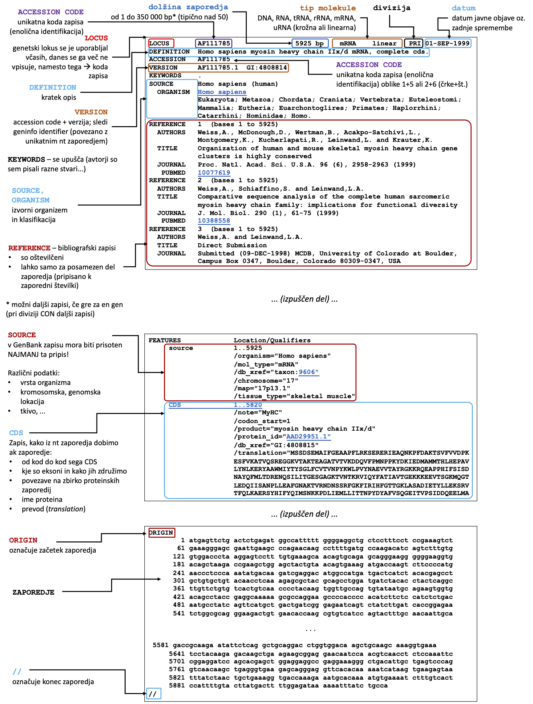

Nukleotidna zaporedja¶
Zbirke nukleotidnih zaporedij¶
Obstajajo tri glavne zbirke nukleotidnih zaporedij, ki pa pravzaprav vsebujejo enake podatke, saj med njimi poteka redna (dnevna) izmenjava oz. sinhronizacija in so del mednarodnega združenja International Nucleotide Sequence Database Collaboration:
GenBank na strežniku NBCI (National Center for Biotechnology Information),
ENA (European Nucleotide Archive) na strežniku EBI (European Bioinformatics Institute) in
GenBank¶
GenBank je zbirka, ki se od zgoraj navedenih uporablja najpogosteje, zato jo bomo uporabljali tudi mi. Do zbirke lahko dostopamo na več osnovnih načinov:
spletni iskalnik Entrez, ki omogoča dostop tudi do drugih podatkov/zbirk, npr. do aminokislinskih zaporedij, struktur makromolekul, PubMed ipd. - gre za način dostopa, ki je podoben oz. enak kot za PubMed pred brskalnika;
programski dostop do Entrez z uporabo NCBI E-utilities (enako kot za programski dostop do PubMed;
iskanje po GenBank s programom BLAST (iskanje podobnih zaporedij);
prek strežnika FTP z anonimnim dostopom, od koder lahko prenesemo datoteke v formatu ASN.1.
Zbirka vsebuje zapise iz različnih virov - od zapisov, ki jih prispevajo posamezni laboratoriji (na primer, sekvencirate cDNA za nek protein iz nekega organizma, deponiranje zaporedja v javno dostopno zbirko je pogoj za objavo članka, v katerem zaporedje omenjate) do velikih genomskih projektov, vključno z zaporedji iz projektov WGS (whole-genome shotgun, sekvenciranje celotnih genomov po principu hitrem postopku shotgun) in TSA (transcriptome shotgun assembly, združena zaporedja iz hitrega sekvenciranja transkriptomov) ter zaporedji, določenih iz vzorcev iz okolja.
Kode zapisov¶
Vsakemu zapisu, ki vsebuje zaporedje in pripise (anotacije, annotations), je določena unikatna identifikacijska koda, imenovana accession number (koda za dostop), ki predstavlja primarni ključ zapisa v zbirko in je enak v vse treh zgoraj omenjenih zbirkah (GenBank, ENA, DDBJ). V zapisu je napisana v vrstici z oznako ACCESSION. Ta koda je nespremenljiva in se ohrani tudi v primeru sprememb vsebine zapisa - v tem primeru se novim verzijam doda oznaka verzije, npr. 5. verzija zapisa za mRNA za človeški tiroglobulin z osnovno kodo za dostop NM_003235 tako postane NM_003235.5 (oznaka verzije je torej za piko). Velja, da ko dostopamo do nekega zapisa v zbirki bomo privzeto vedno dobili najnovejšo verzijo zapisa, razen, če bomo izrecno navedli kakšno drugo verzijo. Priporočljivo je, da pri navajanju kode za dostop (npr. v članku navedemo, da smo uporabili zaporedje i zbirke GenBank pod to in to kodo) vedno navedemo še verzijo.
Vsak zapis ima še eno kodo, imenovano GI (Geninfo Identifier), ki je povezana s točno določeno verzijo zapisa. Na primer, verziji zapisa NM_003235.4 in NM_003235.5 imata drugačno kodo GI.
Divizije¶
Zapisi oz. nukleotidna zaporedja so v zbirki GenBank organizirana v t.i. divizije (GenBank divisions) in sicer glede na taksonomsko razvrstitev organizma, iz katerega zaporedje izhaja, ter glede na pristop sekvenciranja, uporabljen za določitev samega zaporedja. Tako torej ločimo taksonomske in funkcijske divizije.
Taksonomske divizije so: SYN (sintetična zaporedja), PHG (fagi), ENV (zaporedja iz okoljskih vzorcev), VRL (virusi), BCT (bakterije), PLN (rastline), MAM (sesalci, z izjemo tistih, ki so v svoji ločeni diviziji), VRT (drugi vretenčarji), PRI (primati), UNA (zapisi, kjer pripisi ne omogočajo določitve divizije oz. slednja še ni določena), ROD (glodalci), INV (nevretenčarji).
Funkcijske divizije so: TSA (hitro sekvenciranje transkriptomov), WHS (sekvenciranje celotnih genomov s hitrim pristopom), PAT (patentirana zaporedja), GSS (Genome survey sequences), EST (Expressed sequence tag, t.j. kratka zaporedja, ki so prepisana z genomske DNA), HGT (genomska zaporedja, dobljena z visoko zmogljivim pristopom skevenciranja; High-throughput genomic), STS (Sequence tagged sites) in HCT (visoko zmogljivo sekvenciranje cDNA; High-throughput cDNA).
GenBank Flat File¶
Klasična oblika zapisa v zbirki je t.i. ploski format (Flat File), katerega najpomembnejši elementi so na kratko predstavljeni na spodnji sliki, podrobneje pa opisani na uradni spletni strani.

Dodatna literatura¶
kratek video-vodič How to use GenBank
NCBI Minute: A Beginner’s Guide to Genes and Sequences at NCBI na uradnem YouTube kanalu NCBI